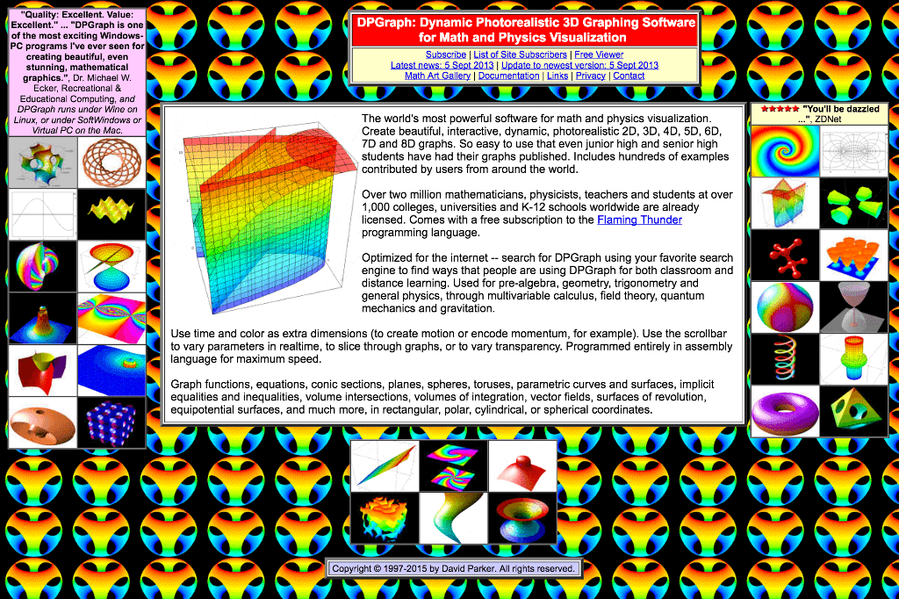

@cssencecssence.com
https://twitter.com/SaraSoueidan/status/690214878578110464 @SaraSoueidan
http://adventurega.me/bootstrap/ @JeremyKarbowski
http://polarb.com/ † @polarpolls
http://cssence.com/ @cssence
 http://www.dpgraph.com/